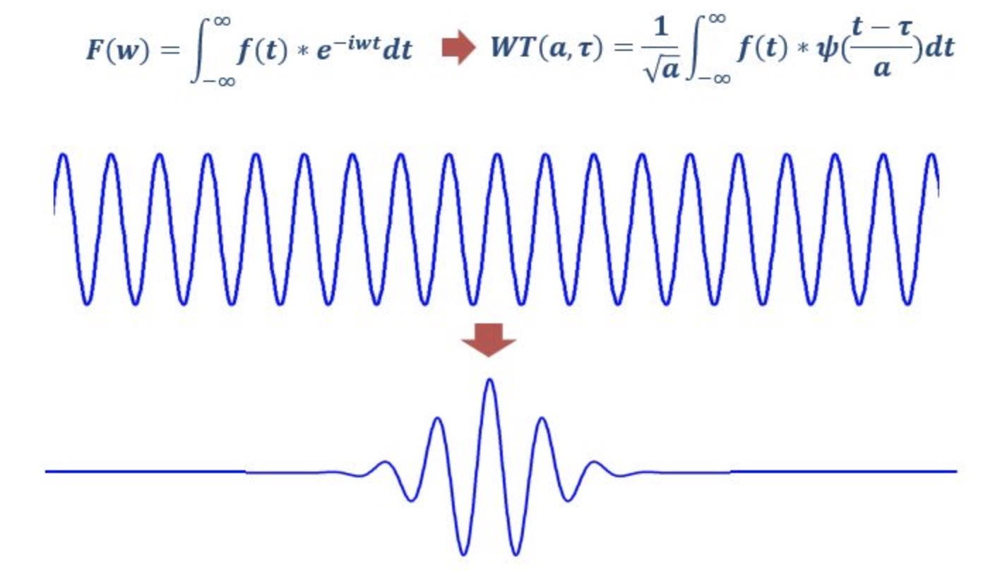

(1) 傅里叶变换
对于非平稳过程，傅里叶变换存在局限性。傅里叶变换处理非平稳信号有天生缺陷。它只能获取一段信号总体上包含哪些频率的成分，但是对各成分出现的时刻并无所知。因此时域相差很大的两个信号，可能频谱图一样。
(2)短时傅里叶变换
解决上述问题，一个简单方法是增加window，把整个时域过程分解成无数个等长的小过程
（3）小波变换
小波做的改变就在于，将无限长的三角函数基换成了有限长的会衰减的小波基。

参考资料
https://zhuanlan.zhihu.com/p/22450818